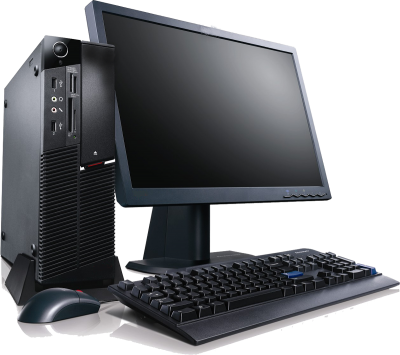
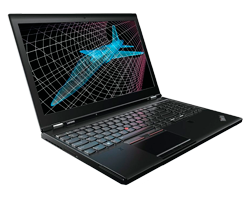

LA TIENDA DE LAS COMPUTADORAS 2023
REGISTRO DE USUARIO
| COMPUTADORAS OFICINA | COMPUTADORAS GAMER | COMPUTADORAS LAPTOP |
| Una supercomputadora es el tipo de computadora más potente y más rápido que existe en un momento dado.Estas máquinas están diseñadas para procesar enormes cantidades de información en poco tiempo y son dedicadas a una tarea específica (científica, militar, etc.) Asimismo son las más caras, sus precios alcanzan los $ 30 millones de dólares y más; y cuentan con un control de temperatura especial, para disipar el calor que algunos componentes pueden alcanzar | Una supercomputadora es el tipo de computadora más potente y más rápido que existe en un momento dado.Estas máquinas están diseñadas para procesar enormes cantidades de información en poco tiempo y son dedicadas a una tarea específica (científica, militar, etc.) Asimismo son las más caras, sus precios alcanzan los $ 30 millones de dólares y más; y cuentan con un control de temperatura especial, para disipar el calor que algunos componentes pueden alcanzar | Una supercomputadora es el tipo de computadora más potente y más rápido que existe en un momento dado.Estas máquinas están diseñadas para procesar enormes cantidades de información en poco tiempo y son dedicadas a una tarea específica (científica, militar, etc.) Asimismo son las más caras, sus precios alcanzan los $ 30 millones de dólares y más; y cuentan con un control de temperatura especial, para disipar el calor que algunos componentes pueden alcanzar |
|  |  |
 |
| Precio S/.3,400 | Precio S/.4,000 | precio S/.3,800 |